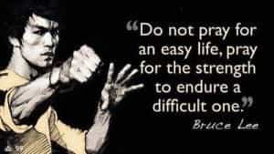

< < < Back
The Eroding Virtue Of Fortitude – Return Of Kings
Greatness is best measured by how well an individual responds to the happenings in life that appear to be totally unfair, unreasonable, and undeserved. – Marvin J.Ashton
One of the greatest realizations that the red pill teaches us is that life is unfair. This becomes even more evident in today’s heavily beta indoctrinating, pleasure-driven gyno-centric societies—where modern men are subject to challenges which they might not even realize, on another dimension different from their forefathers.
But in this scenario, if there is one virtue which would help men withstand the various vicissitudes modern life would throw at them, it is that of fortitude.
Fortitude is the guard and support of the other virtues – John Locke
Fortitude is the strength of mind that allows us to withstand the adversities in life with courage. It is what separates the achievers, the heroes and the survivors from the average – because just as genius may strengthen their ability to outwit and outsmart others, it is fortitude which grants them the resilience to resist and overcome opposition, and outlast others.
Yet with today’s degeneracy, what we see is the increasing and gradual erosion of fortitude from men’s personalities, rendering them pussified, and even worse trained to function as compliant and dutiful slaves to dysfunctional social constructs which demean their own masculine identities, and train them to undermine that of fellow men.
The pussified modern Ahab

With modern men becoming increasingly indoctrinated towards dependency, it’s common to see men being brainwashed into aping copying comical caricatures of pseudo-alphadom.
A modern man is raised to comply to society, his women and more important be afraid and confused of his own masculinity; which he compensates to discover by tyrannizing other men – aka the Modern Ahab.
Yet like a ferocious Rottweiler on leash, he meekly submits to his societal puppet masters and more importantly, his woman.
Heavily socially indoctrinated towards feminism since birth, he’s raised to strangle his resistance to the lies taught by modern society. And because he simply lacks the necessary fortitude to rebel, he ends up living in subservience to a society and women which view him as an expendable tool.
His inability to stand up for his own ideals and masculinity cripples his masculinity—worsened by his own fear of losing out on illusionary comfort from women and material pleasures that society trains to believe as the real thing.
He chooses comfort—stagnating and crippling his metamorphosis into an evolved man—because he lacks the fortitude to endure a difficult but more rewarding one out of his fear of struggle. A modern man should ask: what kind of man am I heading to become?
The necessity of developing fortitude
In today’s world, it’s common to see the strong tyrannize the weak, while simultaneously weakening themselves by submitting themselves to societal pleasures and pressures which corrupt their own personalities.
At the same time, we see men end up living lives of wasted potential and frustrated ambitions simply because they lacked the fortitude to stand up for themselves, or take charge of their own lives.
Thus it becomes extremely important for a man (moreso a redpiller) to develop fortitude to withstand the onslaught of challenges that modern life would thrust on him – whether physically, emotionally and morally. This is best summarized in the following excerpts from The Book Of Pook:
Endure. All your exes will have one thing in common: they want you to fail.The last thing they want is to run into you later and see you successful. No! They want to see you remain the same or sink lower.
Endure. All the girls that shot you down: they want you to fail. A big fear in woman is missing The Great Catch. Give substance to their fear.
Endure. At your high school reunion, the ones you knew will come back with secret desires of seeing failures everywhere, even at you. Defy them.
Endure. For it is the same for 99% of the people, they get grounded up into conformity and become bewildered as their lives become more and more joyless. They will feel threatened by you.
…The more successful you become in life,the more and more people will despise you. No one despises the innocent Nice Guy who happily takes orders. But everyone envies the one who knows what he wants and takes it, the guy who won’t be played,and the guy who manages to unite dream and day.
….Endurance alone is power ultimate.
…So endure. We are the sum of our endurance.
There are many simple ways to develop fortitude. For example, embrace spirituality and meditate regularly to develop mental toughness and clarity.

Take care of your body, for it houses your all important mind. Purge the martyr complex (if existent) from your psychology, and cut off negative and draining connections to people and things in life who’d be dragging you down and preventing you from the realization of your true potential.
Prevent emotions from getting the best of you. Embrace self reliance, do not jeopardize your financial freedom and nurture your unique individuality. Do not fear failure, solitude or struggle and realize that we are all Sisyphus; and sometimes in life,we have to persistently fight a battle more than once to actually win it.
Conclusion
In today’s world of deceptive illusionist pleasures, it becomes extremely important for a man not to get lost and waste himself by submitting to these—and there is no substitute for fortitude to endure the vagaries of modern life.
Life is a test, and only the ones who endure it with fortitude are the true masters of their own destinies. In the end, it doesn’t always matter where you start in life, but what does matter is how you endure it and where you finish at. Fortitude is an indispensable companion to have on that journey.
Read Next: Growth Vs. Comfort


{kind=link}
{kind=link}
{kind=link}